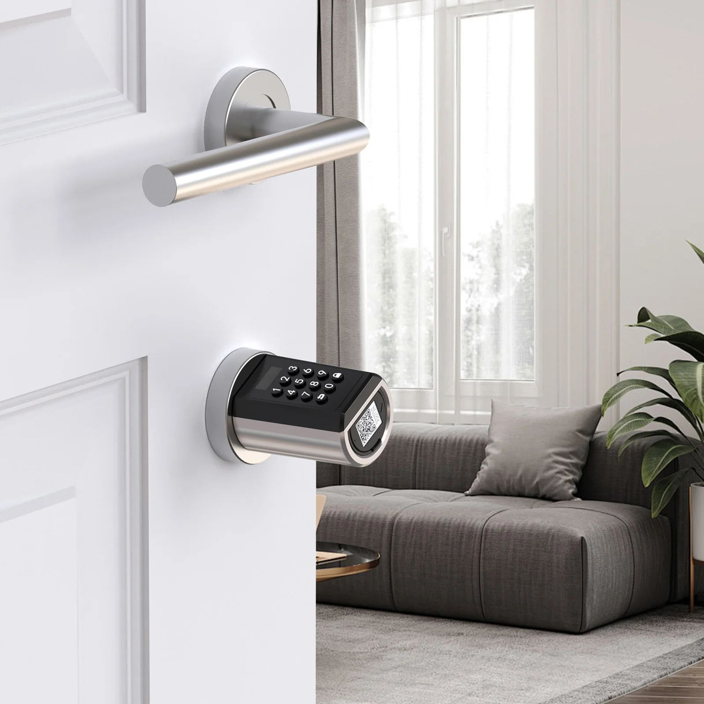

Serrure intelligente et boîte à clés : ce qui marche vraiment pour remettre les clés

Vous avez un logement en location courte durée au Maroc, et chaque arrivée recommence : appeler le voyageur, lui expliquer où est la rue, l'attendre, lui remettre les clés. Un ami qui gère deux appartements vous dit qu'il a installé une serrure à code et qu'il ne se déplace plus jamais. Un installateur vous annonce 2 690 DH. Sur Jumia, la même semaine, vous voyez une boîte à clés à 99 DH. Les deux solutions existent, elles ne coûtent pas la même chose, et elles ne posent pas les mêmes problèmes.
Ce guide donne les prix réellement pratiqués au Maroc en 2026, les pannes que les vendeurs ne mentionnent pas, et un point que personne n'écrit : ce que dit la loi marocaine sur la remise des clés — vérifié dans le texte publié au Bulletin officiel.
Combien coûte une serrure intelligente au Maroc : les prix relevés
Les prix ci-dessous sont des prix constatés en octobre 2026 sur les sites des installateurs et des boutiques marocains, en dirhams, installation comprise sauf mention contraire. Ils peuvent évoluer : vérifiez le tarif du jour avant de vous engager.
- Serrure à empreinte et code, posée : dès 890 DH
- Serrure à codes, sans pilotage à distance : 1 590 DH
- Pack serrure + contacteur + pose : 1 490 DH
- Serrure avec ouverture à distance : 2 690 DH
- Modèles avec reconnaissance faciale : 2 350 à 3 590 DH
- Haut de gamme avec caméra et interphone : 3 699 DH
- Installation standard seule : 990 à 3 990 DH
- Déplacement et diagnostic : 100 DH, gratuit si réparation
Le plancher est 890 DH posée. Le haut de gamme monte à 3 700 DH. Pour une location courte durée, la zone utile se situe entre 1 500 et 2 700 DH.
À côté de ça, une boîte à clés à code coûte entre 85 et 160 DH sur Jumia, livraison comprise à 7-10 DH. Le modèle haut de gamme, un coffre mural, monte à 457 DH.
C'est le vrai écart à retenir : ce n'est pas 890 DH contre 2 700 DH, c'est 100 DH contre 2 000 DH. Une boîte à clés coûte dix à vingt fois moins qu'une serrure connectée. Encore faut-il savoir ce qu'on perd en choisissant la moins chère.
La question à poser avant d'acheter : peut-on ouvrir à distance ?
Toutes les serrures à code ne s'ouvrent pas à distance, et c'est le piège numéro un. Un installateur marocain le dit lui-même de son propre modèle à 1 790 DH : il gère des codes, mais on ne peut pas déverrouiller la porte depuis un téléphone à l'autre bout du pays. Dans sa gamme, un seul modèle permet l'ouverture à distance.
La question exacte à poser au vendeur, mot pour mot : « puis-je déverrouiller la porte depuis mon application, sans être sur place ? »
Si la réponse est non, ce que vous achetez est une serrure à codes : pratique pour le ménage, inutile quand un voyageur vous appelle à 2 h du matin parce que le code ne marche pas.
Attention aussi au point suivant, relevé dans la documentation des installateurs eux-mêmes : les actions à distance — créer un code, déverrouiller — exigent que la serrure soit connectée. Sans internet, les codes déjà créés continuent de fonctionner, mais plus rien ne se pilote à distance. Au Maroc, avec une connexion instable, une coupure d'électricité, ou une box partagée entre plusieurs appartements, ce n'est pas un détail.
Les pannes que les vendeurs ne racontent pas
Voici la partie qui manque partout ailleurs, relevée sur les forums officiels des fabricants et sur les retours d'utilisateurs.
La connexion Wi-Fi qui tombe. Sur le forum officiel d'un grand fabricant européen, les déconnexions à répétition sont si nombreuses que le support a fermé le fil de discussion consacré au problème. Un utilisateur a mesuré une batterie descendue à 52 % en deux semaines, avec le routeur à moins de cinq mètres. Le fabricant reconnaît lui-même que le problème vient de la gestion d'énergie, et le correctif proposé consomme plus de batterie.
La porte qui reste déverrouillée. Un cas documenté : la serrure a perdu sa connexion en pleine manœuvre de déverrouillage, et la porte est restée ouverte. La seule façon de la refermer était d'intervenir sur place, en Bluetooth.
Le dépannage suppose quelqu'un sur place. Le conseil qui revient sur les forums est de retirer puis remettre la batterie. Autrement dit : quand la serrure tombe en panne, il faut quelqu'un devant la porte. Or c'est exactement ce qu'on cherchait à éviter.
Le bruit. Un utilisateur décrit une fermeture suffisamment sonore pour réveiller des enfants la nuit. À vérifier avant d'installer le modèle dans une chambre, ou dans un riad aux murs fins.
Les modèles pilotés par l'application Tuya — fréquents parmi les serrures bon marché vendues au Maroc — sont signalés, dans les retours d'utilisateurs, pour trois défauts récurrents : consommation anormale de piles, poignée qui ne remonte plus, et perte du verrouillage. Une serrure qui ne se verrouille plus est un problème de sécurité, pas de confort.
Boîte à clés : pourquoi les assureurs s'en méfient
La boîte à clés est la solution la moins chère, et elle a ses propres failles.
Elle est repérable et facile à forcer. Des propriétaires rapportent, sur des groupes d'hôtes marocains, que des personnes ont abordé leurs voyageurs à l'arrivée pour leur « proposer de les aider à ouvrir la boîte ».
Le point le plus important, et le moins connu : plusieurs contrats d'assurance excluent le vol lorsqu'il n'y a pas d'effraction de la porte. La clé prise dans une boîte ne laisse aucune trace d'effraction. À vérifier dans votre propre contrat : c'est un argument qu'aucun vendeur de boîtes à clés ne met en avant.
Elle rouille. Les modèles d'entrée de gamme durent 12 à 18 mois en conditions humides. Au bord de mer — Essaouira, Agadir, Casablanca — c'est le point faible à surveiller.
Ce que dit la loi marocaine sur la remise des clés : elle n'en parle pas
C'est le point que personne n'écrit, et il est vérifié.
La location courte durée au Maroc est encadrée par la loi n° 80-14 relative aux établissements touristiques et autres formes d'hébergement touristique, et par son décret d'application n° 2-23-441 du 13 juillet 2023, publié au Bulletin officiel.
Ce décret organise l'autorisation d'exploitation pour l'hébergement chez l'habitant et l'hébergement alternatif. Son article 60 prévoit que l'autorisation est délivrée sur demande déposée, contre récépissé, auprès de l'autorité locale compétente. Son article 61 énumère les pièces du dossier : la demande d'autorisation, une copie de la carte d'identité nationale électronique du responsable, une copie du contrat d'assurance prévu à l'article 34 de la loi, les photos des chambres et des espaces communs, une copie du permis d'habiter ou un certificat délivré par un ingénieur spécialiste, et le cahier des charges d'exploitation signé par le responsable.
Aucun de ces textes ne mentionne les clés, la remise des clés, la boîte à clés, la serrure ou le digicode. Le décret parle de chambres, d'espaces communs, de permis d'habiter, d'assurance et de cahier des charges. Il ne dit rien sur la manière dont le voyageur entre dans le logement.
Ce que cela signifie concrètement : à notre lecture du décret, aucune de ses dispositions ne traite de la remise des clés. Cela ne veut pas dire que tout est permis : cela veut dire que le texte ne tranche pas ce point, et qu'il faut se référer à la commune et à son propre contrat d'assurance.
Ne pas confondre avec la France. L'interdiction des boîtes à clés sur la voie publique, les règles de copropriété, les amendes municipales : c'est du droit français, et ça ne s'applique pas au Maroc.
En revanche, deux obligations restent, elles, bien réelles et indépendantes de la remise des clés : l'autorisation d'exploitation et la déclaration des voyageurs auprès de la DGSN.
*Sur un sujet réglementaire, vérifiez toujours votre situation avec la commune concernée : l'application varie d'une préfecture à l'autre.*
Questions fréquentes
Une serrure connectée est-elle rentable pour une location courte durée ?
Le calcul dépend du nombre d'arrivées. À 1 500 DH la serrure et 150 DH la boîte à clés, l'écart est de 1 350 DH. Une serrure se justifie si elle vous évite des déplacements réguliers, ou si le logement est loin de chez vous. Si un voisin ou un gardien peut remettre les clés, la boîte reste largement suffisante.
Que se passe-t-il si la serrure n'a plus d'internet ou plus de piles ?
Les codes déjà créés continuent de fonctionner : le voyageur peut toujours entrer. En revanche, vous ne pouvez plus créer un nouveau code, ni déverrouiller à distance. Prévoyez toujours une clé mécanique de secours : tous les modèles relevés au Maroc en proposent une. Et vérifiez le niveau des piles avant chaque arrivée.
Faut-il une autorisation pour installer une serrure à code au Maroc ?
Pour la serrure elle-même, aucun texte marocain ne l'exige : le décret 2-23-441 ne traite pas de la remise des clés. En revanche, si le logement reçoit des voyageurs, l'autorisation d'exploitation reste obligatoire, et la déclaration des voyageurs auprès de la DGSN aussi. Ce sont deux obligations distinctes de la question de la serrure.
Ce qu'il faut regarder avant d'acheter : la liste en sept points
1. Ouverture à distance, oui ou non ? Posez la question au vendeur, dans ces mots. 2. Que se passe-t-il si le Wi-Fi tombe ? Les codes déjà créés doivent continuer à fonctionner. 3. Y a-t-il une clé mécanique de secours ? Tous les modèles relevés en proposent une. 4. Combien de piles, et quelle autonomie annoncée ? Puis demandez l'autonomie réelle constatée. 5. Le modèle résiste-t-il à la chaleur et à l'air marin ? Un modèle « extérieur » est annoncé : c'est une réponse, pas encore une preuve. 6. Qui dépanne, et en combien de temps ? Un installateur annonce une intervention sous 2 h à Marrakech avec astreinte. Faites-le confirmer par écrit. 7. L'application est-elle indépendante du vendeur ? Une serrure qui ne fonctionne que par l'intermédiaire d'un installateur local devient un piège le jour où il ferme.
Conclusion : ce qui coûte le moins cher n'est pas toujours la boîte à clés
Deux solutions, deux logiques. La boîte à clés coûte entre 85 et 160 DH (jusqu'à 457 DH pour un coffre mural) et règle le problème de la remise des clés du jour au lendemain — mais elle rouille, elle se repère, et une assurance peut refuser d'indemniser un vol sans effraction de la porte. La serrure intelligente coûte dix à vingt fois plus cher, elle peut lâcher sans prévenir, et son dépannage suppose quelqu'un sur place — mais elle vous évite de vous déplacer, elle trace les accès, et elle crée un code différent par séjour.
Le vrai critère n'est ni le prix, ni la technologie : c'est la distance entre le logement et vous. Un propriétaire qui vit à Casablanca et loue à Marrakech n'a pas le même besoin qu'un propriétaire qui vit dans la même ville que son logement.
Et sur la loi, une chose est sûre : le décret 2-23-441 ne tranche pas la question des clés. Faites le choix qui vous convient, en gardant en tête l'autorisation d'exploitation et la déclaration des voyageurs, qui, elles, ne sont pas facultatives.
*Ce guide est rédigé par l'équipe d'Agence WebBot, assistant WhatsApp pour la gestion locative au Maroc (agencewebbot.com). Le décret cité a été lu dans sa version publiée au Bulletin officiel.*
Une question sur votre situation ? Écrivez-nous : contact@agencewebbot.com — dites en deux lignes ce que vous vivez, nous répondons nous-mêmes.